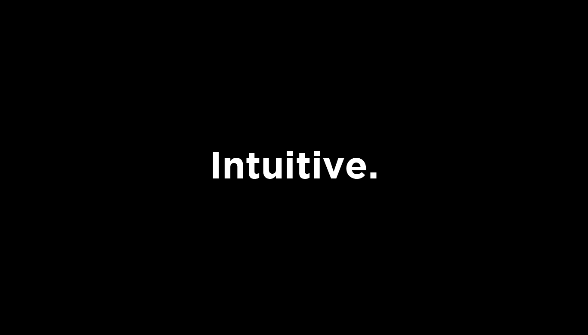
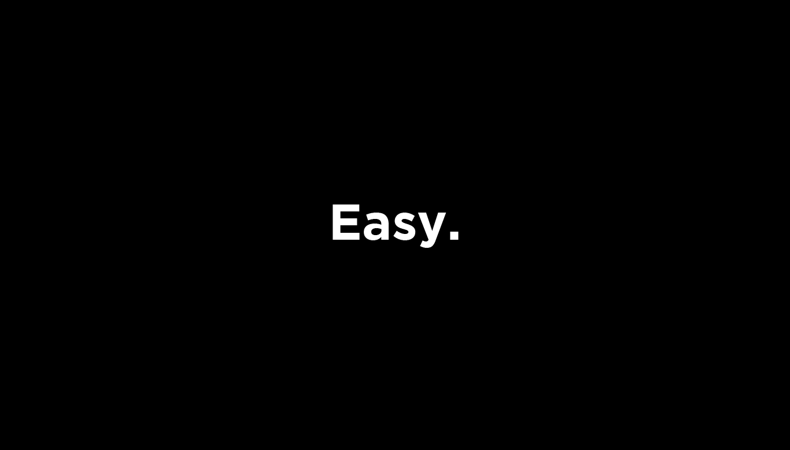
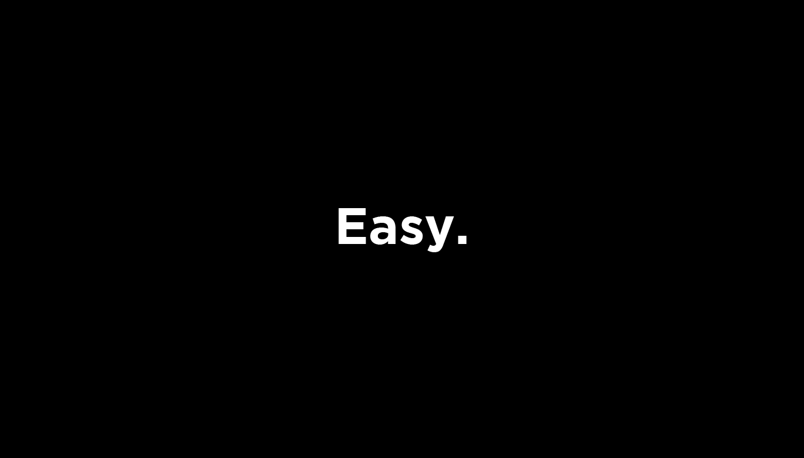
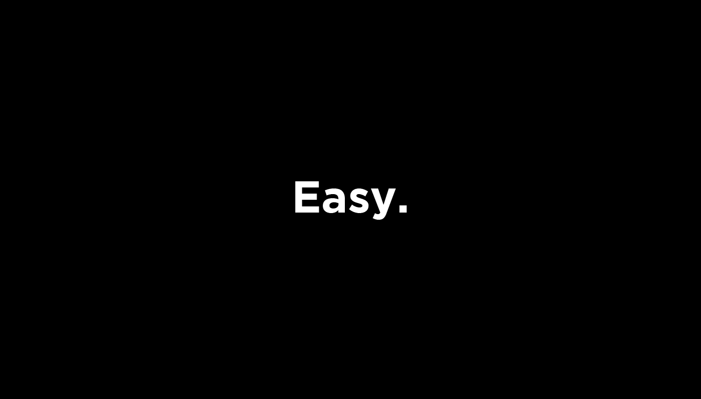
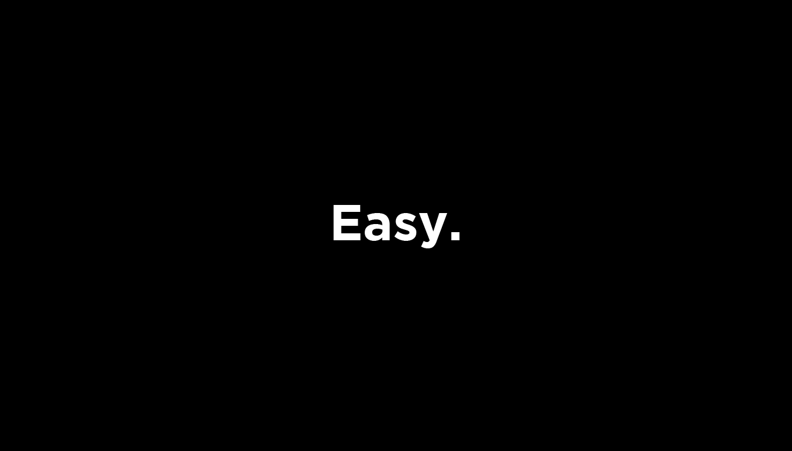

 



A production console does more than make your studio look pro, it gives you immersive control over your mix. With RAVEN you can touch your plugins as if they’re hardware, quickly execute insane DAW commands with your fingers, and have the studio you’ve always dreamed of.


RAVEN consoles are used by some of the biggest names in music like Snoop Dogg, Steven Aoki, Will.I.Am, Dolly Parton, Dj Swivel, Just Blaze, and more.
The RAVEN software turbocharges your workflow and lets you mix faster than with any other console available. The all-new Studio Mixer gives you an easy to use.